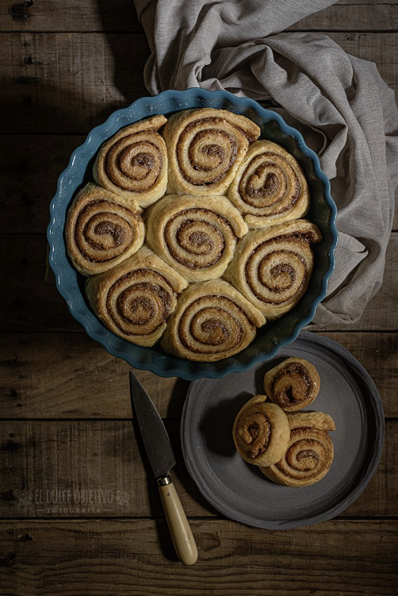

SALAILLAS
Ingredientes para 14 rolls:
Para la masa:
- 500 gr. de harina de fuerza w300.
- 5 gr. levadura fresca.
- 220 gr. de leche tíbia.
- 50 gr. de azúcar moreno o panela.
- 170 gr. de mantequilla a temperatura ambiente.
- 1 pizca de sal.
- Ralladura de una naranja.
Para el relleno:
- 80 gr. de mantequilla.
- 80 gr. de azúcar moreno.
- 1 cucharada de Speculoos.
- 1 cucharadita de canela en polvo.
- 1/2 cucharadita de cardamomo en polvo.
Glaseado:
- 80 gr. de agua.
- 70 gr. de azúcar.
Preparación:
- Rallamos nuestra naranja, solo la parte de color y reservamos.
- Disolvemos la levadura en la leche tibia con una pizca de azúcar y dejamos reposar unos 5 minutos para que esta se empiece a activar.
- Mezclamos la harina, el resto del azúcar, la piza de sal y la ralladura de naranja en el bol donde lo vamos a masar.
- Incorporamos a nuestra mezcla la leche con la levadura y empezamos a amasar con el accesorio gancho (si lo hacemos a máquina) hasta que todos los ingredientes estén bien integrados y tengamos una masa compacta.
- En este momento, y sin dejar de amasar, es cuando vamos añadiendo la mantequilla en daditos para que se vaya mezclando bien, y seguimos amasando hasta que tengamos una masa homogénea, brillante y elástica. Este proceso nos puede llevar unos 10 minutos aprox.
- Hacemos una bola con el y lo llevamos a un recipiente, en mi caso a un tupper que es cuadrado y alto, engrasado con un poco de aceite. Marcamos con una señal y esperamos a que doble su volumen, unos 5 horas a 26º.
- Aquí tenemos dos opciones, podemos acelerar el proceso, o bien buscamos un lugar cálido, a unos 26º es lo ideal y como os he dicho, tardará en torno a 5 horas, o bien, esperamos a ver que nuestra masa se activa y empieza a crecer un poco, y en ese momento la llevamos al frigo para retardar el levado y que pase por ejemplo toda la noche, para terminar con el proceso al día siguiente.Cuanto más retardamos el proceso de levado, más se intensifican los aromas y sabores.
- Con nuestra masa duplicada, es el momento de formar nuestro Cinnamon Rolls.
- Preparamos el relleno, para ello es tan simple como hacer una pasta con la mantequilla en pomada, el azúcar (que yo he triturado con un molinillo de café, para hacer un polvo, pero que no es necesario), y las especias.
- Desgasificamos nuestra masa con los dedos y con un rodillo estiramos formando un rectángulo de unos 30 x 60 cm.
- Con ayuda de una espátula, extendemos de forma uniforme por toda la superficie de la masa nuestra crema de relleno.
- Enrollamos sobre sí misma y a todo lo largo nuestra masa.
- Yo he desechamos los extremos para que me salgan cortes limpios y he cortado porciones de unos 4 cm de grosor más o menos, lo que me ha dado 14 rollitos.
- Colocamos en una bandeja de cerámica redonda o simplemente sobre la superficie de nuestra bandeja de hornear si los queremos de forma individual.
- Cubrimos con un film para que no se nos reseque y volvemos a dejar levar hasta que vuelvan a doblar el volumen en un lugar cálido. Esto puede llevar unas 3 horas más o menos.
- Con el horno precalentado a 170º con calor arriba y abajo, metemos nuestra bandeja cuando esté lista. Yo no he pincelado con nada los rollitos pero se puede hacer con huevo o con leche si queréis un color un poco más doradito.
- Estarán en el horno, a esa temperatura entre 30 y 35 minutos. Pasado este tiempo sacamos y dejamos templar un poco.
- Mientras tanto, preparamos el almíbar poniendo al fuego el agua con el azúcar y dejando hervir durante 3 minutos.
- Con nuestros Cinnamon Rolls aún templados y el almíbar recién hecho, los pincelamos bien por todas partes y los dejamos enfriar para que creen una capa de glaseado maravilloso.
